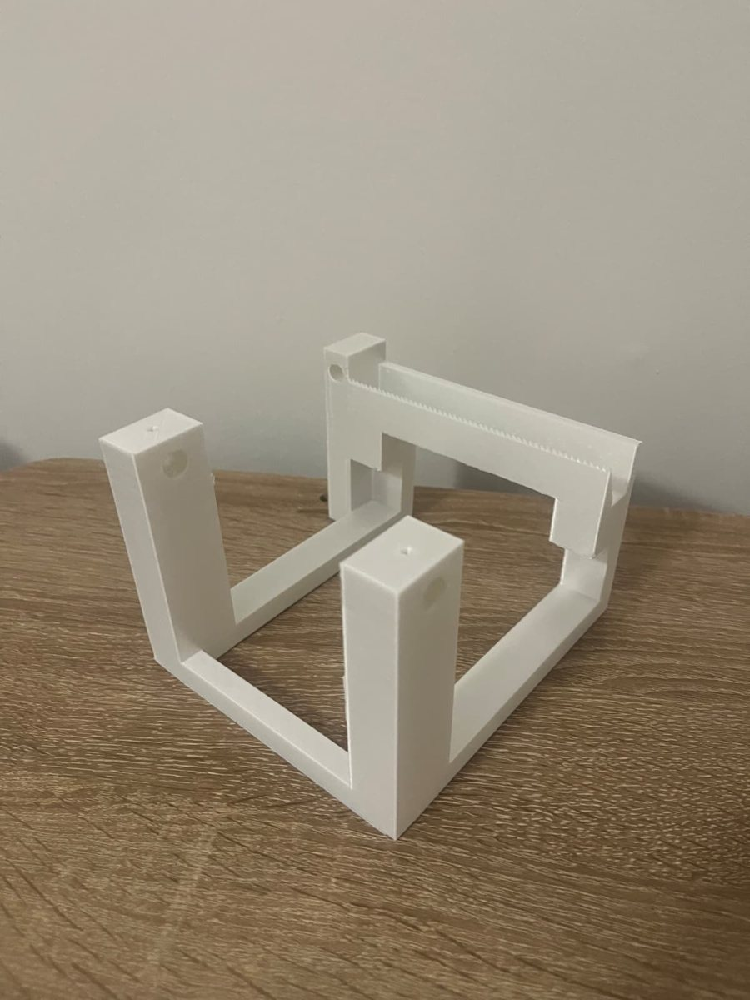
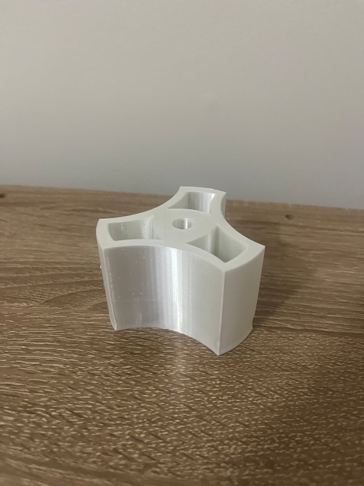
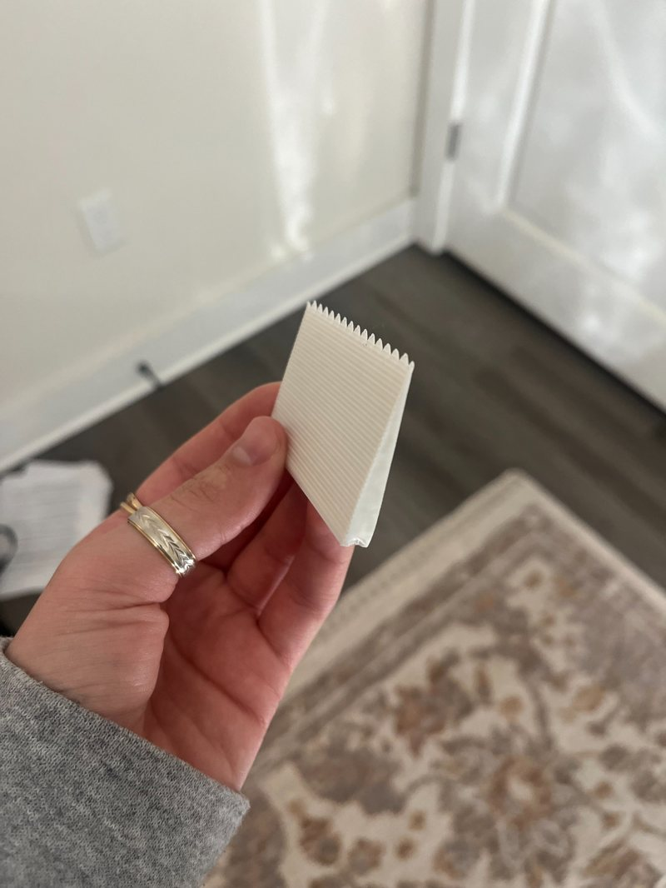
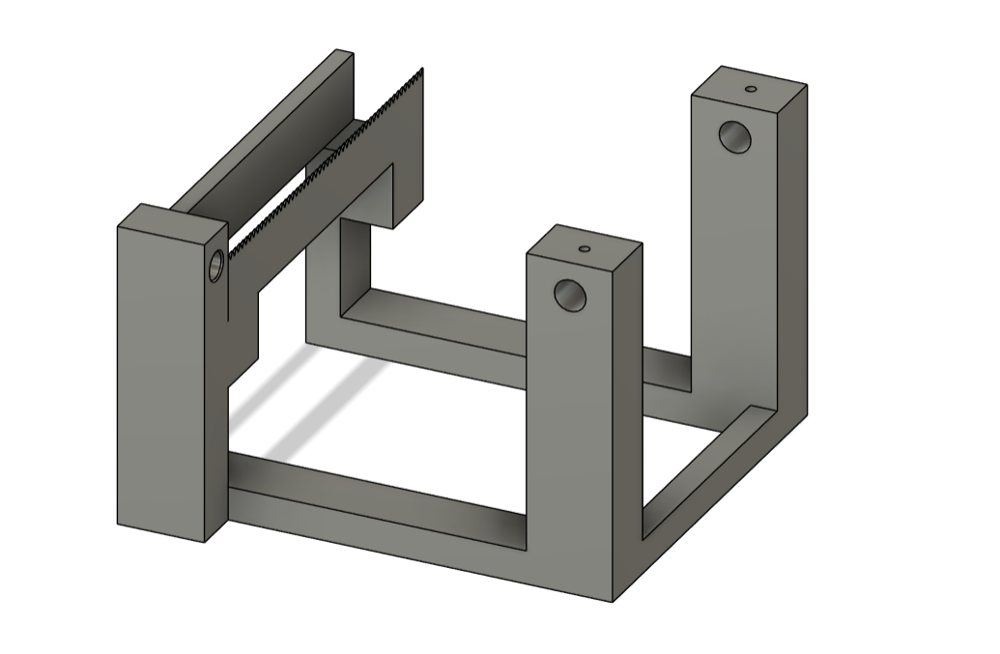
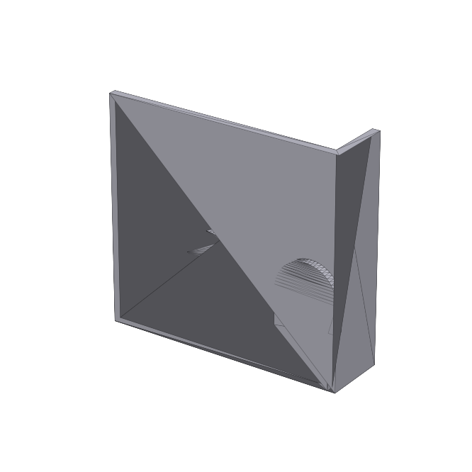

Additive manufacturing · Fall 2026
Multi-Roll Tape Dispenser
Work in progress
A 3D-printed dispenser that holds more than one roll of tape, designed around the rules of restrictive design for additive manufacturing (DfAM).
Where it stands
Printed, tested, and about to iterate
The first version is printed and assembled. It cuts both Scotch tape and paper tape and dispenses a 1 inch length well. The project is still a work in progress because the next round of changes has not been built yet.
Iteration 1
The printed parts



Design
The chassis, in CAD


What testing showed
It works, and three things need fixing
| Area | What we saw | Planned change |
|---|---|---|
| Cutting | Cuts Scotch and paper tape, but the stickiness makes the cut stressful. | Swap the sides of the scissor mechanism so the cut is easier. |
| 1 inch length | Dispenses 1 inch well. | Rotate the 1 inch marker to the y-axis instead of extending the frame along the x-axis, which saves build material and space. |
| Threading | The tape rolls back toward the roll after each dispense. | Reduce the height of the threading bar. |
These are planned changes, not results. I will update this page after the next print.
Why restrictive DfAM
Designing for the printer, not around it
The course asks us to design for the limits of additive manufacturing from the first sketch rather than fix print failures afterward. Restrictive DfAM means those limits shape the form: what can be printed without supports, how parts are oriented, and how many parts the design needs. The marker change above is a small example: turning it saves filament and footprint.
Still to come
Iteration 2 prints and what changed between versions.